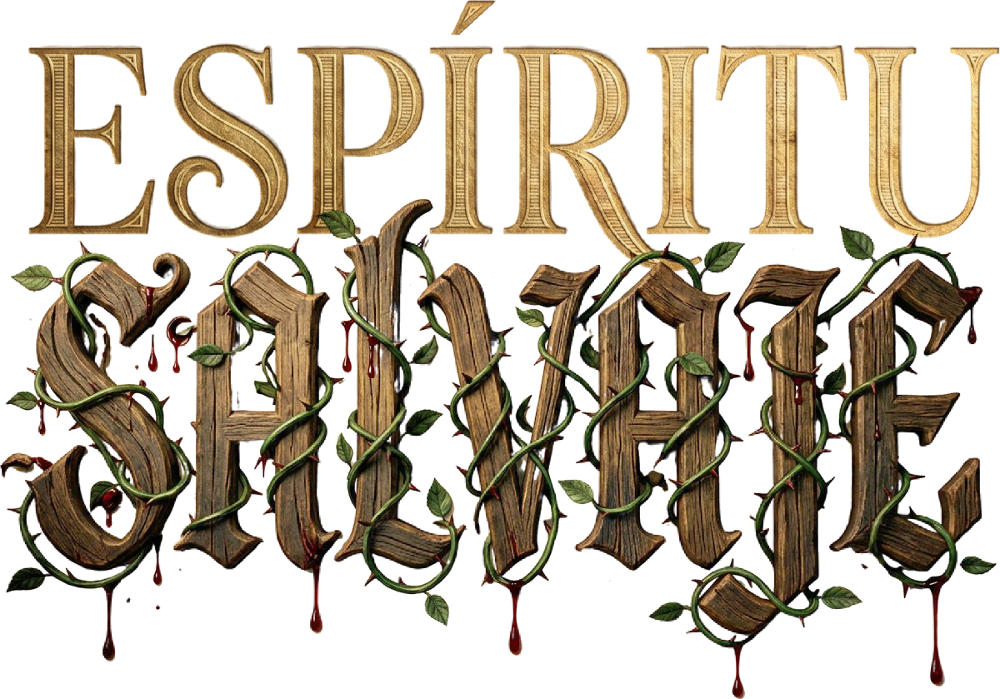
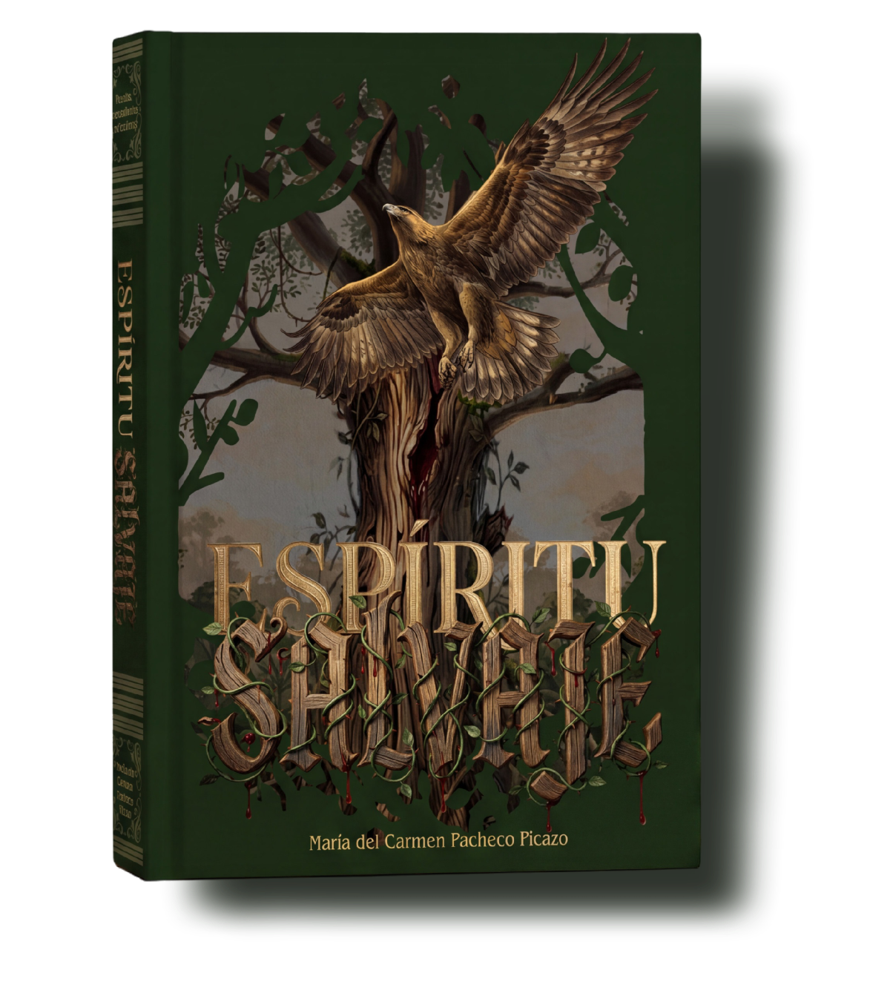
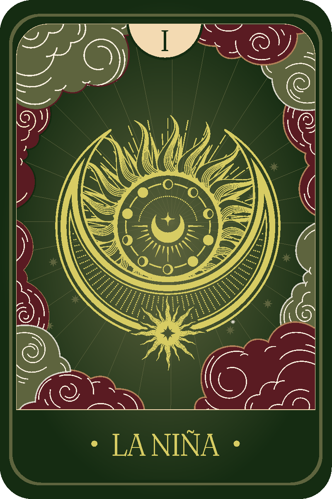
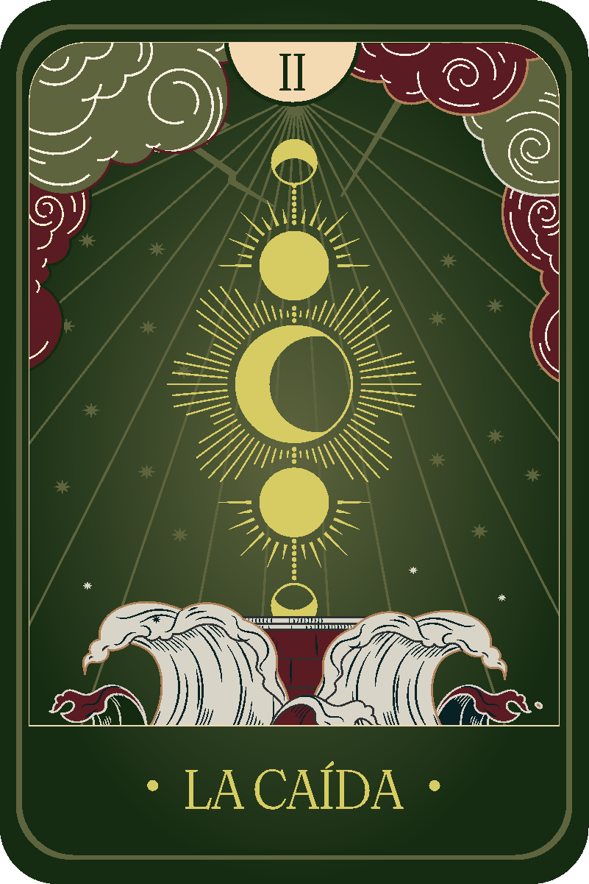
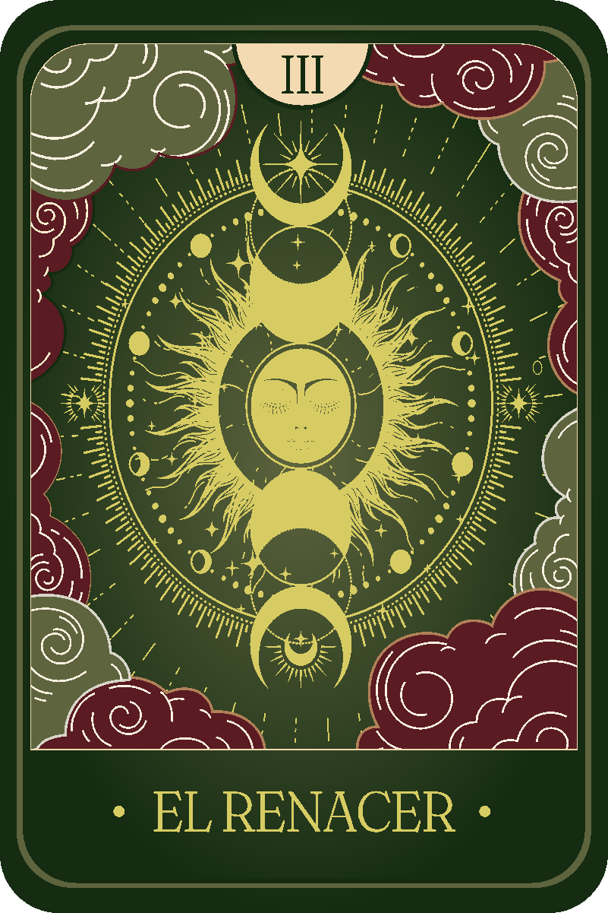
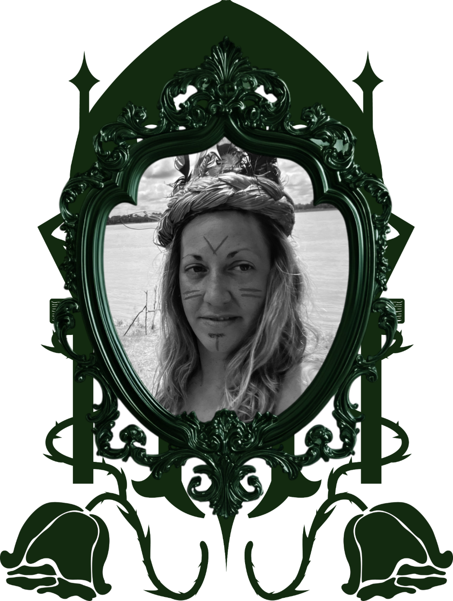

Si alguna vez te has sentido perdida, rota, enamorada, vulnerable o renaciendo… en estas páginas vas a reconocerte.

Empecé a escribir a los doce años, en un cuaderno que escondía. No pensaba en publicar nada: escribía para entender lo que me pasaba dentro.
Treinta y dos años después, esos cuadernos son este libro. No he corregido a la niña que fui ni he suavizado a la mujer que vino después. Lo he dejado tal como se escribió.
Si algo de lo que hay aquí te sirve para nombrar lo tuyo, entonces ya ha valido la pena.
Espíritu Salvaje es un viaje de 32 años contado a través de palabras. Empieza con una niña de 12 años que escribe poesías para entender lo que siente, y termina con una mujer que ha renacido después de atravesar pérdidas, amores intensos, caos, dependencia emocional y la noche oscura del alma.
Son textos que evolucionan contigo: la inocencia, la pasión, el error, la caída, el duelo y, finalmente, la reconstrucción. Romperte por completo para construirte de nuevo.
Una historia real, sincera, imperfecta y profundamente humana.
El libro no se ordena por temas, sino por edades. La voz que escribe cambia con los años y se oye cambiar.

Poesías escritas a mano, a los doce años, para poner nombre a lo que todavía no se entiende: el primer amor, el miedo, la casa, el cuerpo que cambia.

Pasión, dependencia emocional, pérdida. Los textos se alargan y se oscurecen: aquí está la noche oscura del alma, sin adornos.

La voz se serena. Romperse por completo para construirse de nuevo, y no volver a pedir permiso para ser salvaje.
Están enamorados, no lo pueden negar,
pues con esas miradas, se puede revelar.
Es un amor prohibido, pues no se pueden tocar,
hay otra en media a la que él no quiere de verdad.
Con la primera tiene una vida entera,
con la segunda un corto verano cualquiera.
Hoy he podido soñar, desde lo más alto del universo, que la vida era maravillosa. Hoy he podido tocar mi castillo de cristal, que parece resquebrajarse poco a poco, y aunque intento reparar los desperfectos, por otro lado, sigue cayendo… y cayendo.
…Hoy he visto la luna y he pensado en ti. Nunca un hombre me había dicho: “Mira la luna”. Cómo algo tan sencillo puede ser tan importante para mí. Sí, la luna, me encanta mirarla. Como yo, siempre sola y no por eso deja de brillar, cuando ve de frente al sol. Así como ella brillo yo, aunque no te tenga de frente, brilla mi corazón cuando te pienso, cuando te recuerdo…
Mari Carmen Pacheco Picazo es autora del libro de poesía y memorias Espíritu Salvaje, publicado en 2025. Su escritura se mueve entre el verso íntimo y la reflexión autobiográfica, en la línea de las autoras contemporáneas que abordan la vida desde adolescente a adulta femenina, el duelo, el amor, y los procesos de reconstrucción personal.
Comenzó a escribir a los 12 años en cuadernos personales y nunca dejó de hacerlo. Durante 32 años llenó esos cuadernos con poemas, reflexiones, cartas que nunca envió y pensamientos escritos en silencio. Espíritu Salvaje recoge las páginas que sobrevivieron a todas esas vidas, las felices y las difíciles.

La fotografía de la portada del libro la hizo ella misma en la Amazonía peruana, en el lugar donde, después de mucho tiempo, volvió a encontrarse consigo misma. Su voz busca conectar con quienes han atravesado caídas profundas y han aprendido a reconstruirse: mujeres que se reconocen en la vulnerabilidad, en la intensidad y en la fuerza ganada con dolor. Escribe para nombrar lo que muchas veces no encuentra palabras, y para acompañar a quien lee.
“No soy escritora profesional. Soy una mujer que escribe.”
Esa frase resume su forma de entender la literatura: la palabra como refugio, como verdad y como puente hacia otras personas. Enamorada del amor más intenso, profundo y desafiante, amante de la libertad en todo su esplendor, ambas cosas le costó tanto encontrar, al buscar fuera lo que siempre estuvo ahí, dentro de ella misma, y anhelaba ansiosa vivirlo de la manera que describe, en un largo proceso de subidas y bajadas.
“Me ha encantado!
Absolutamente inspirador
Un libro amable, cariñoso y cercano que transmite claramente la maravillosa complejidad de la mente de su autora.
Súper recomendable ♡”
“Emocionante!!! Siempre ha tenido un don para describir sus pensamientos de una manera poética. Por ello ha conseguido hacer realidad un sueño de escribir un libro, el cual esta salvajemente lleno de vivencias plasmadas de sentimientos a flor de piel. Para todos los que tienen un espíritu salvaje les encantará.”
“Me enganchó de principio a fin. Una gran mujer que ha sido capaz de superar y salir fortalecida de una dura experiencia.”
“Me ha encantado esa forma de espresar sus relatos cortos.
Muy agradable la lectura.
Espero al siguiente libro ansioso…”
“Un libro que habla de la superación y resiliencia. Una historia personal muy conmovedora ❤️”
“Admiro la fortaleza y valentía de la escritora y como a través de los relatos cuenta su vida y superación personal.Pienso que es un libro que podría ayudar a muchas personas. Me ha gustado mucho y lo recomiendo 100%”
Las dos cosas. Poesías, pensamientos y reflexiones escritos en el momento en que ocurrieron, ordenados como una vida: de la infancia al renacer.
No. Está escrito en lenguaje directo, sin artificio y sin claves que haya que descifrar.
En tapa blanda, tapa dura y Kindle, a través de Amazon. Y gratis para quien tenga Kindle Unlimited.
Sí, cada texto se sostiene solo. Pero leído de principio a fin se oye cómo cambia la voz con los años, y eso es parte del libro.
Sí. Duelo, dependencia emocional y noche oscura del alma aparecen sin eufemismos y sin morbo.
El libro se distribuye por Amazon, así que la disponibilidad y los plazos dependen de tu país.
Espíritu Salvaje pertenece al segundo grupo.